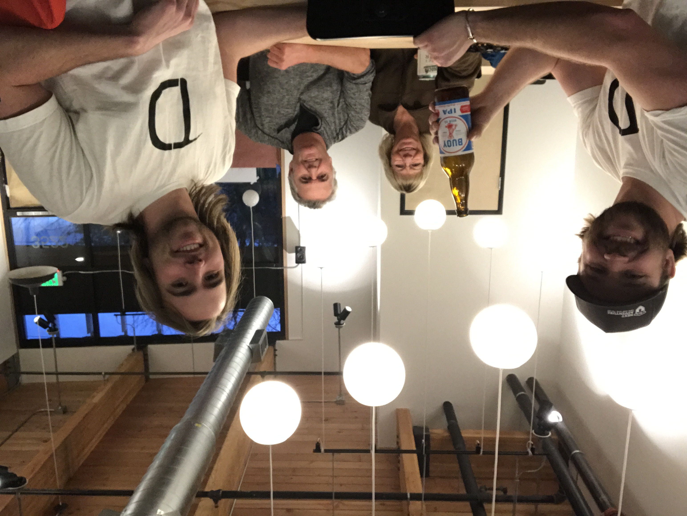

Past Lives
I was a cat

At least that's what the animal spirit card said.
Waste Reduction Educator

"Know before you throw" was an old motto of mine. I still try to adhere to it today. What it essentially means is to know what's recyclable, and what's not in your local area. Every waste system is different, so check local guidelines to see what's proper!
I grew up in the waste industry, and from 2012 - 2017 I did waste reduction education. I helped schools, businesses, multifamily developments, and cities with their waste reduction efforts.
DIY BAR

In 2015 I co-founded DIY BAR with my brother in Portland, OR. It's a place for crafty and not so crafty people. I took a step out in June of 2022 to pursuit other interests. They provide all of the tools, materials, instructions, and liquid encouragement to help you get crafty!
What's Next?
The garden is going to be nothing but weeds this summer.
But that's okay, because my mind will be full of information, which I hope to convert into knowledge.
Learning to program has been on the back burner for the past 2 years. With COVID, and the shut downs, running a small business that's based on people gathering in a shared space became very challenging. My brother and I worked tirelessy to try and figure out solutions to make the business work. We launched an online business overnight, I learned the ins and outs of social media advertising, along with email marketing, but business wasn't what it was pre-pandemic. We opened up, then had to shut down twice from COVID numbers peaking. When we opened back up for good, the amount of people that we used to easily have walk through the door halved.
After 2 years of trying things and not having them stick, I realized I wasn't the business. I am my own autonomous being, and the business is it's own thing. We don't need each other to survive.
When I realized this, the idea of programming came back full force.
I know what I like:
- Working collaboratively
- Problem solving (and eventually seeing results)
- Learning new things
- Being able to work remotely
- Having a work / life balance
- Being compensated nicely for the work I'm doing
Programming seemed to check all of these boxes, and then some. I started with free online resources, then moved to some courses through Udemy to get a taste of what programming might be like. I would spend a few hours every morning going over a course to make sure I was enjoying what I was doing. After a month or so of doing this, I decided I would benefit from going all in on a coding bootcamp.
Another month or so of researching bootcamps lead me to Coding Temple.
I'm excited to dive deeper into the program, be challenged daily, and see where my path goes. At this point I don't have an end destination, but I'm looking to enjoy the ride.